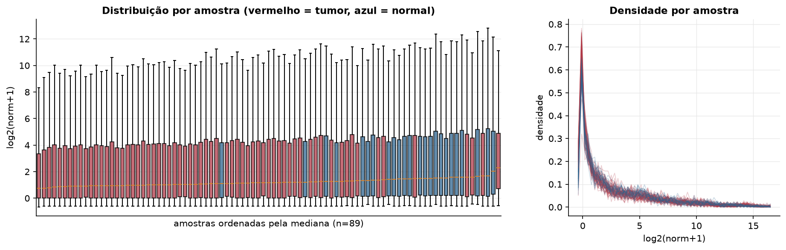
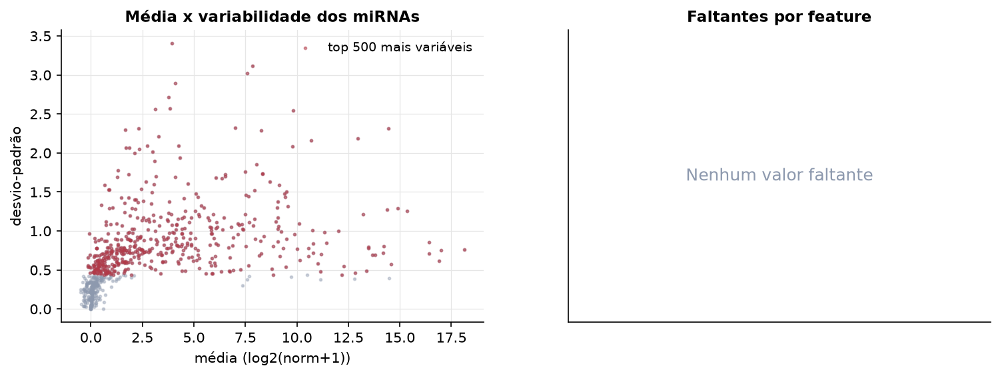
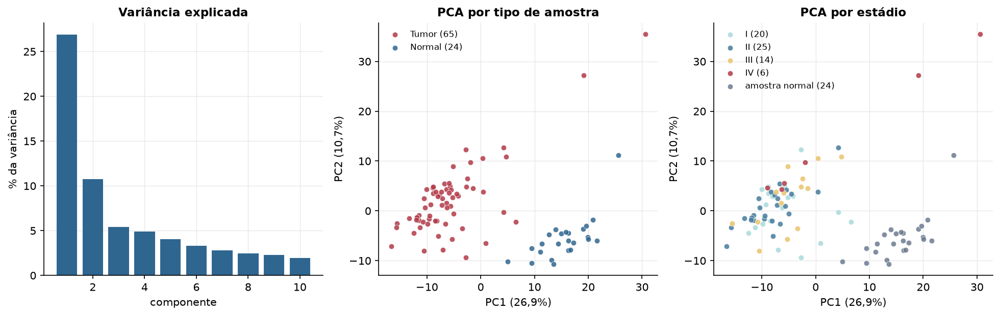
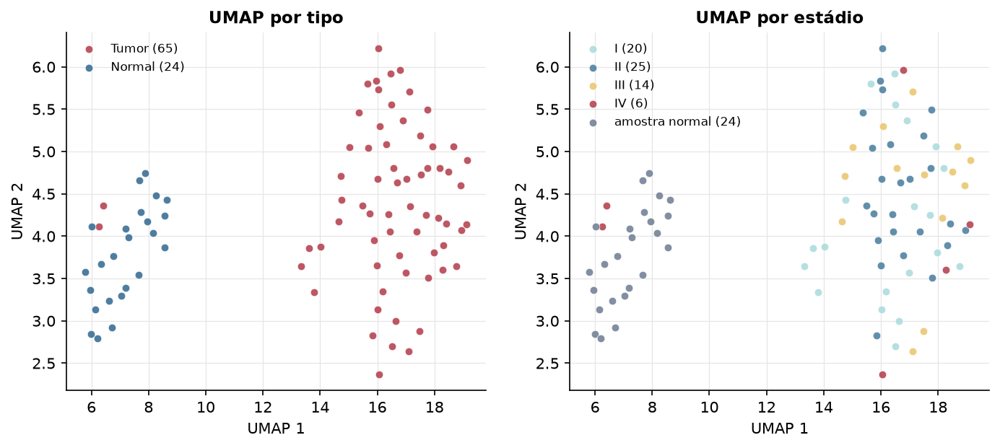
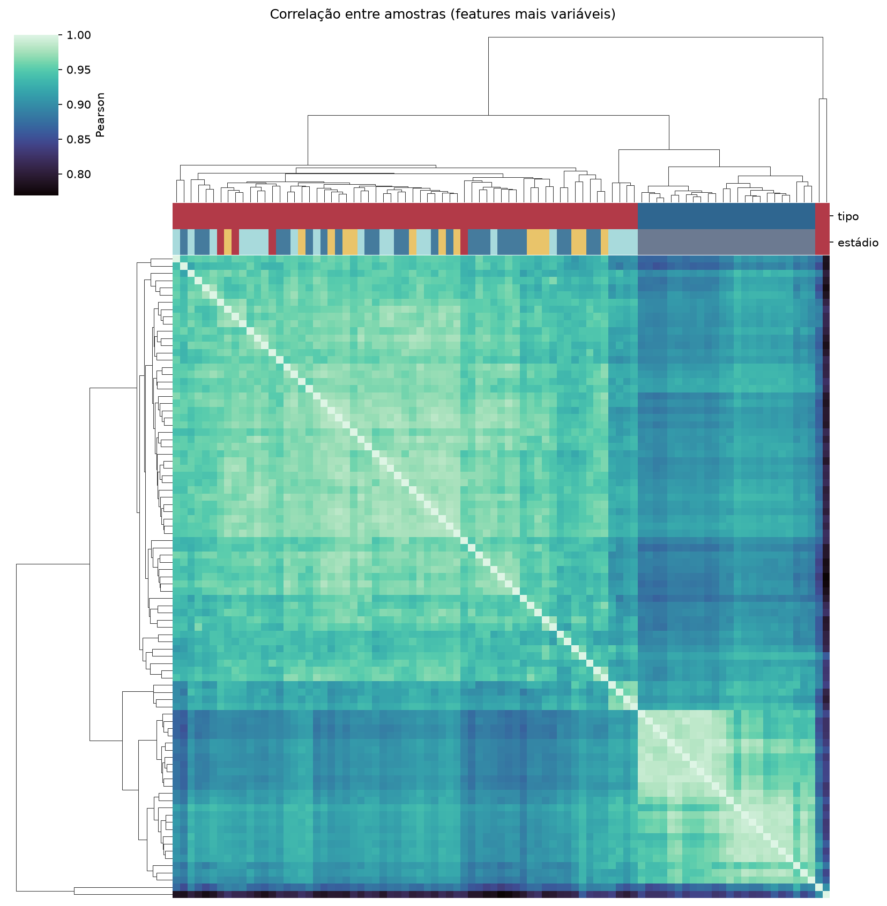
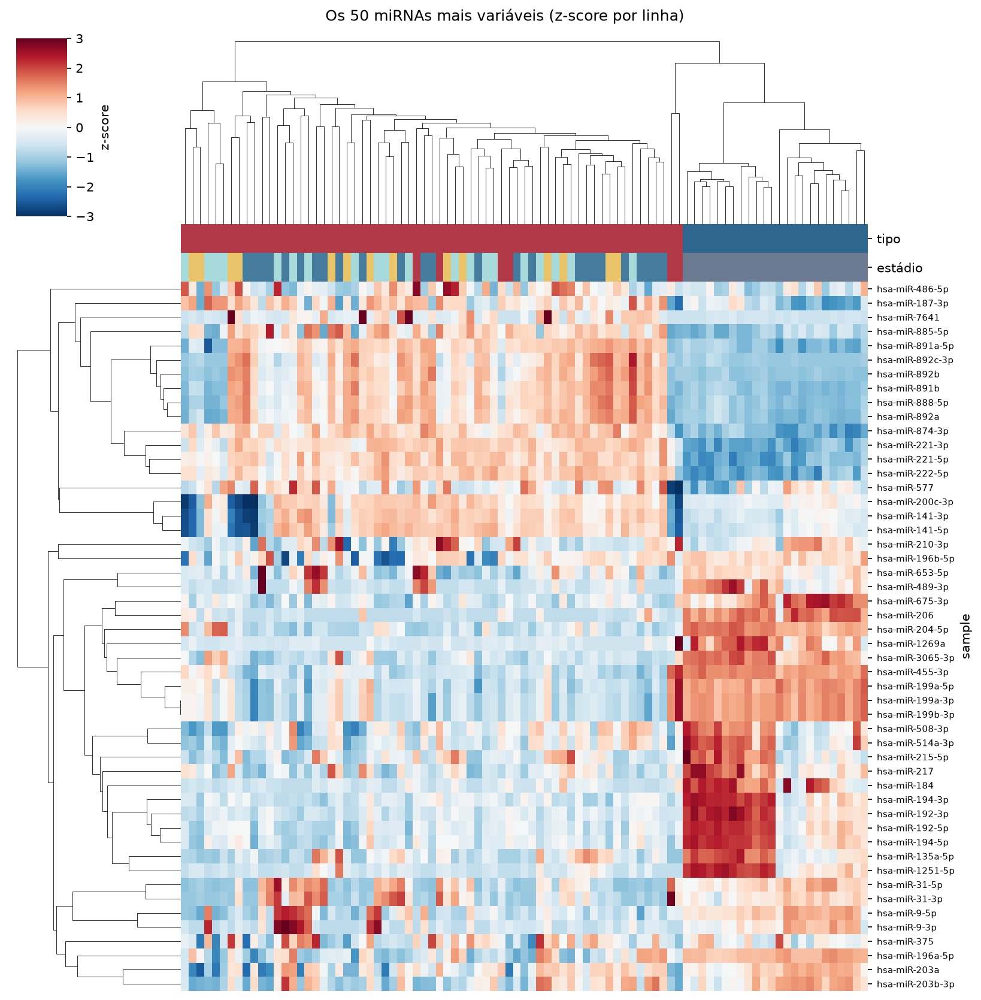
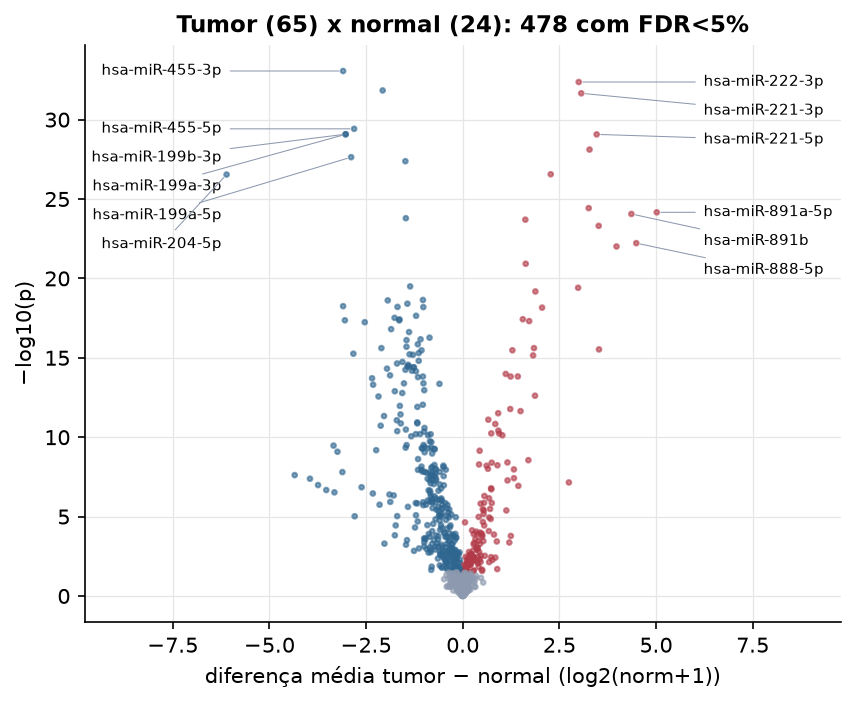
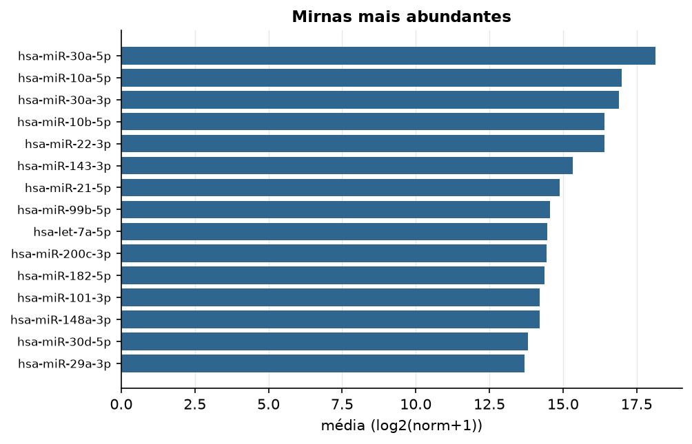

KICH · miRNA-seq (PanCanAtlas)
miRNA maduro, normalizado e corrigido por lote (EB), log2(x+1) · gerado em 21/10/2026 22:18
743miRNAs
65amostras tumorais
24amostras normais
0,0%valores faltantes
Fonte: PanCanAtlas (pancanMiRs_EBadjOnProtocolPlatformWithoutRepsWithUnCorrectMiRs_08_04_16.xena)
Fita madura (5p/3p) já normalizada. As contagens brutas por precursor estão no relatório de contagens.
Principais resultados
- 743 miRNAs medidos em 89 amostras (65 tumorais e 24 normais); 0,0% dos valores estão faltando.
- Os dois primeiros componentes principais explicam 26,9% e 10,7% da variância das features mais variáveis.
- Correlação mediana entre amostras: 0,93.
- Amostras com correlação muito abaixo das demais (possíveis outliers técnicos): TCGA-KN-8427-01, TCGA-KO-8404-01.
- Tumor x normal: 478 miRNAs diferentes com FDR < 5% (147 maiores no tumor, 331 maiores no normal; 24 pacientes têm o par tumor-normal).
- Mais aumentados no tumor: hsa-miR-222-3p, hsa-miR-221-3p, hsa-miR-221-5p, hsa-miR-874-3p, hsa-miR-582-3p, hsa-miR-222-5p, hsa-miR-891a-5p, hsa-miR-891b.
- Mais reduzidos no tumor: hsa-miR-455-3p, hsa-miR-130a-3p, hsa-miR-455-5p, hsa-miR-199b-3p, hsa-miR-199a-3p, hsa-miR-199a-5p, hsa-miR-1287-5p, hsa-miR-204-5p.
- Associações clínicas com p < 0,05 nos componentes principais: PC1 com estádio (p=0.013); PC1 com sobrevida (p=0.0031).
Distribuição dos valores


Estrutura das amostras




Tumor x normal

Features mais diferentes entre tumor e normal
| sample | diferenca_tumor_menos_normal | t | p | fdr |
|---|---|---|---|---|
| hsa-miR-455-3p | -3.094 | -19.781 | 8.67e-34 | 6.39e-31 |
| hsa-miR-222-3p | 3.001 | 26.535 | 4.29e-33 | 1.58e-30 |
| hsa-miR-130a-3p | -2.071 | -19.368 | 1.46e-32 | 3.58e-30 |
| hsa-miR-221-3p | 3.066 | 24.081 | 2.2e-32 | 4.06e-30 |
| hsa-miR-455-5p | -2.809 | -18.66 | 3.81e-30 | 5.61e-28 |
| hsa-miR-199b-3p | -3.029 | -17.406 | 8.3e-30 | 7.84e-28 |
| hsa-miR-199a-3p | -3.028 | -17.406 | 8.44e-30 | 7.84e-28 |
| hsa-miR-221-5p | 3.464 | 23.415 | 8.51e-30 | 7.84e-28 |
| hsa-miR-874-3p | 3.279 | 19.47 | 7.68e-29 | 6.29e-27 |
| hsa-miR-199a-5p | -2.886 | -16.406 | 2.32e-28 | 1.71e-26 |
| hsa-miR-1287-5p | -1.484 | -16.274 | 4.16e-28 | 2.79e-26 |
| hsa-miR-582-3p | 2.276 | 15.915 | 2.77e-27 | 1.63e-25 |
| hsa-miR-204-5p | -6.108 | -16.528 | 2.88e-27 | 1.63e-25 |
| hsa-miR-222-5p | 3.258 | 21.097 | 3.75e-25 | 1.97e-23 |
| hsa-miR-891a-5p | 5.019 | 14.538 | 6.88e-25 | 3.38e-23 |
| hsa-miR-891b | 4.363 | 14.915 | 8.75e-25 | 4.03e-23 |
| hsa-miR-26b-3p | -1.471 | -16.874 | 1.62e-24 | 7.01e-23 |
| hsa-miR-618 | 1.619 | 14.273 | 2e-24 | 8.19e-23 |
| hsa-miR-892a | 3.516 | 14.137 | 4.89e-24 | 1.9e-22 |
| hsa-miR-888-5p | 4.489 | 13.718 | 6.02e-23 | 2.22e-21 |
| hsa-miR-892b | 3.977 | 14.594 | 9.73e-23 | 3.42e-21 |
| hsa-miR-582-5p | 1.629 | 12.88 | 1.19e-21 | 3.99e-20 |
| hsa-miR-887-3p | -1.361 | -13.846 | 3.19e-20 | 1.02e-18 |
| hsa-miR-892c-3p | 2.984 | 12.861 | 3.87e-20 | 1.19e-18 |
| hsa-miR-96-5p | 1.879 | 12.609 | 6.62e-20 | 1.95e-18 |
| hsa-miR-23b-3p | -1.029 | -11.796 | 2.28e-19 | 6.45e-18 |
| hsa-miR-143-5p | -1.939 | -11.884 | 2.42e-19 | 6.61e-18 |
| hsa-miR-505-5p | -1.431 | -12.267 | 3.91e-19 | 1.03e-17 |
| hsa-miR-206 | -3.095 | -17.743 | 5.6e-19 | 1.42e-17 |
| hsa-miR-214-5p | -1.687 | -12.388 | 6.24e-19 | 1.52e-17 |
Associação com variáveis clínicas
p-valores da associação dos três primeiros componentes principais (só tumores) com estádio (Kruskal-Wallis), sexo (Mann-Whitney), idade (Spearman) e sobrevida global (Cox univariado).
| estádio (Kruskal) | sexo (Mann-Whitney) | idade (Spearman) | sobrevida OS (Cox) | |
|---|---|---|---|---|
| PC1 (21,0%) | 0.013 | 0.391 | 0.243 | 0.003 |
| PC2 (8,3%) | 0.285 | 0.785 | 0.285 | 0.501 |
| PC3 (6,8%) | 0.352 | 0.695 | 0.732 | 0.842 |
Mais abundantes
